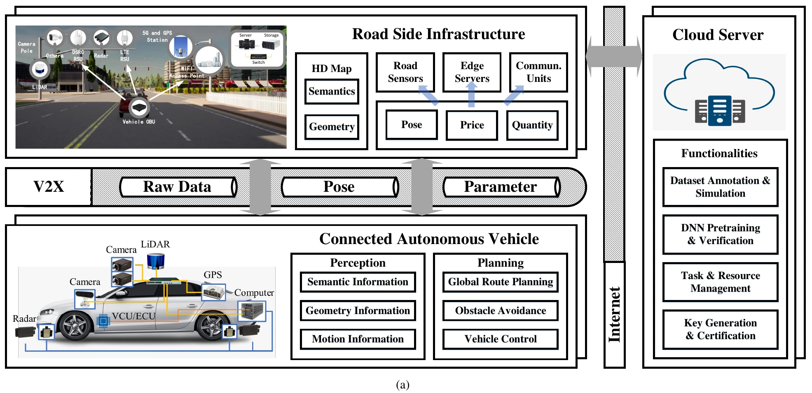
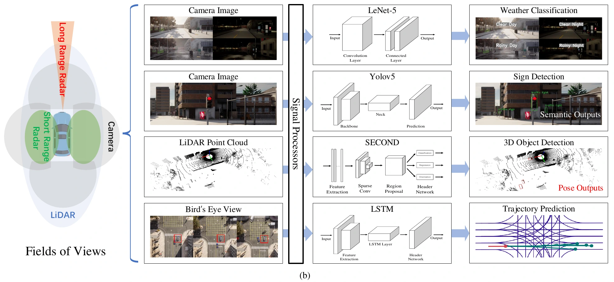
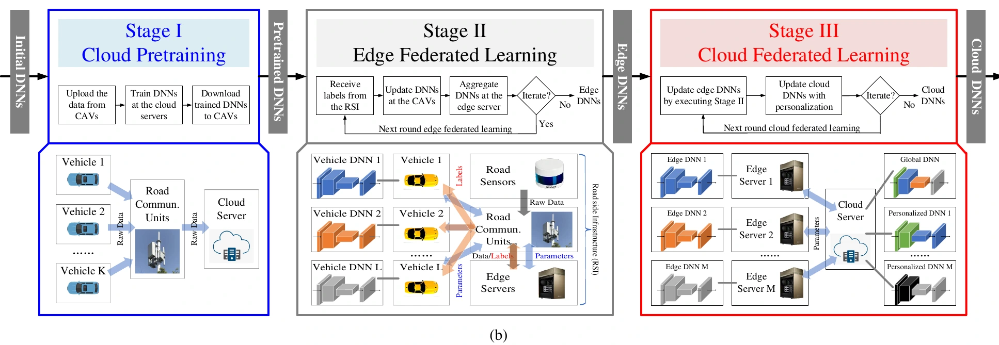
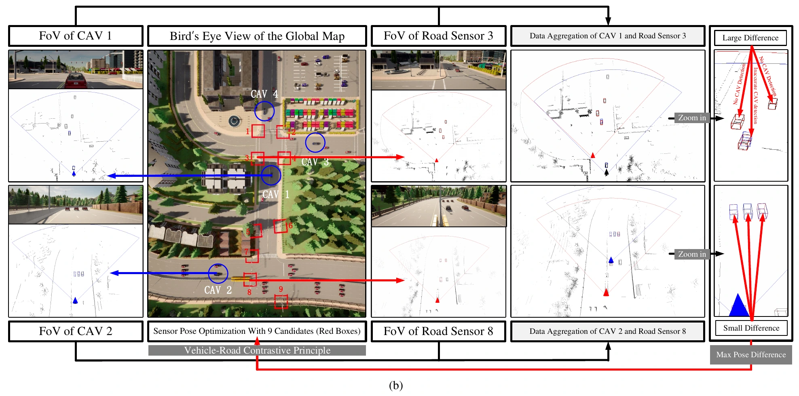
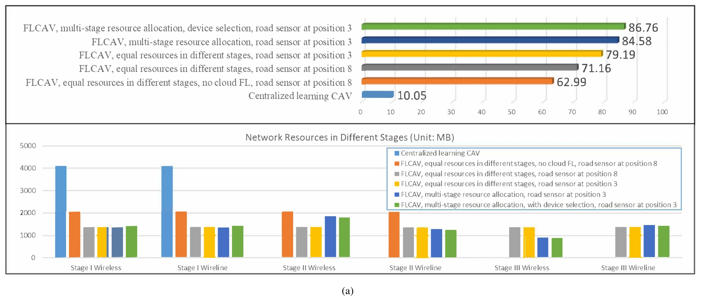
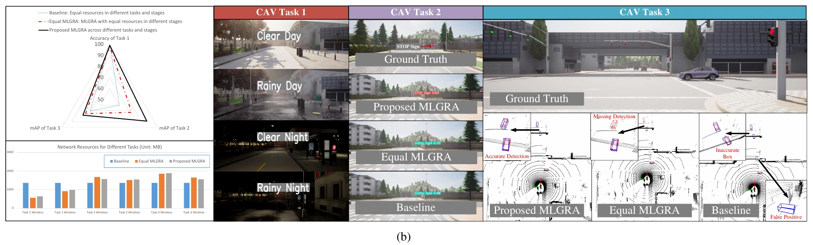

CarlaFLCAV
Federated Deep Learning Meets
Autonomous Vehicle Perception:
Design and Verification
IEEE Network · 2023
1Shenzhen Institute of Advanced Technology, Chinese Academy of Sciences 2HKUST (Guangzhou) 3University of New South Wales 4Weizmann Institute of Science 5Princeton University 6Southern University of Science and Technology; Shenzhen Research Institute of Trustworthy Autonomous Systems 7University of Macau
* Equal contribution

Overview
Corner cases and visual occlusions make autonomous vehicle perception difficult in open driving scenarios. Federated learning assisted connected autonomous vehicles (FLCAV) learn from data distributed across vehicles and road sensors by exchanging model parameters and perception outputs.
CarlaFLCAV provides a CARLA-based platform for studying this system: synchronized multi-modal data generation, perception models, federated training, and resource allocation. The paper connects network design and sensor placement to the accuracy of downstream driving tasks.

Architecture
Three stages of federated training
Cloud pretraining initializes the perception model. Edge federated learning combines vehicle updates with road-sensor knowledge. Cloud federated learning then aggregates the regional models, with personalization for individual regions.

Network resources and road sensor placement
Multi-layer graph resource allocation (MLGRA) distributes communication resources across training stages, tasks, and sensing modalities to reduce perception error. Vehicle-road contrastive sensor placement (VRCSP) prioritizes locations where vehicle and road-sensor detections disagree, helping reveal occluded objects.

CARLA Simulation
A platform for system-level experiments
CarlaFLCAV combines dataset generation, perception tasks, federated learning frameworks, and optimization modules. Data collection includes synchronized sensor observations, calibration, and annotations.
The Data Recorder is based on our carla_dataset_tools repository.
Browse code and installation instructions ↗
Evaluation across three towns
The single-task experiment trains SECOND for 3D object detection. Training data come from Town02, Town05, and Town03; evaluation uses 2,432 Town05 point clouds. Wireless and wireline uplinks each have a 4 GB communication budget.
| Stage | Map | Point-cloud samples |
|---|---|---|
| Cloud pretraining | Town02 | 5,000 |
| Edge FL | Town05 | 4 CAVs × 500 |
| Cloud FL | Town03 | 3 CAVs × 500 |
| Evaluation | Town05 | 2,432 |
Experimental Results
Single-task 3D object detection
MLGRA with contrastive road sensor placement achieves 84.58% mAP; adding device selection reaches 86.76% mAP. The figure compares the training configurations and their communication resource allocations.

Multi-task perception
The proposed allocation achieves 99.0% weather classification accuracy, 88.8% traffic sign mAP, and 78.16% object detection mAP in the multi-task experiment.

From CARLA to real-world KITTI data
To examine transfer beyond simulation, the paper trains SECOND on 3,000 CARLA point clouds for 60 epochs and evaluates it on KITTI data, reporting 58% mAP at an IoU threshold of 0.5.
Demos
Citation
If CarlaFLCAV supports your research, please cite our paper.
@article{CarlaFLCAV,
title={Federated deep learning meets autonomous vehicle perception: Design and verification},
author={Shuai Wang and Chengyang Li and Derrick Wing Kwan Ng and Yonina C. Eldar and H. Vincent Poor and Qi Hao and Chengzhong Xu},
journal={IEEE Network},
year={2023},
volume={37},
number={3},
pages={16--25}
}Related paper: over-the-air federated learning
Edge Federated Learning via Unit-Modulus Over-the-Air Computation · IEEE Transactions on Communications, 2022
@article{CarlaFLOTA,
title={Edge federated learning via unit-modulus over-the-air computation},
author={Shuai Wang and Yuncong Hong and Rui Wang and Qi Hao and Yik-Chung Wu and Derrick Wing Kwan Ng},
journal={IEEE Transactions on Communications},
year={2022},
volume={70},
number={5},
pages={3141--3156}
}